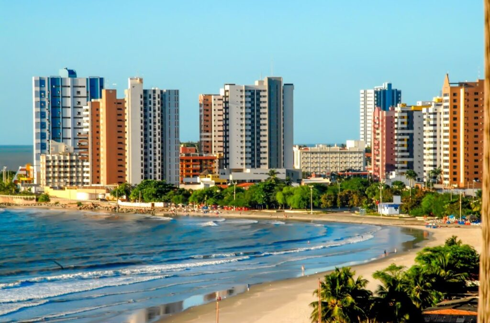
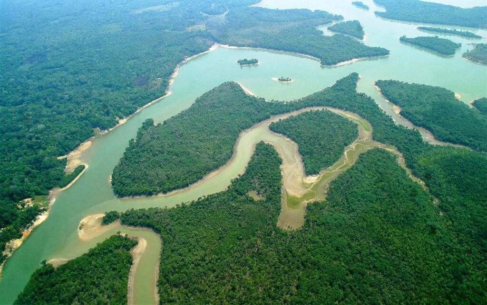

Descubra os principais
pontos turisticos do Maranhão
O maranhão é o lar de diversas belezas naturais e construídas. Seja desde os lençois maranhenses até o centro histórico de São Luís. Descubra quais são elas!.
PONTOS TURISTICOS DO MARANHÃO
O estado tem como capital a cidade de São Luís, que ficou conhecida por seus museus, casarões e todo um centro histórico que em 1997 foi declarado como Patrimônio Mundial pela Unesco. As cidades de São José de Ribamar, Alcântara e Raposa, estão ligadas pela região metropolitana da capital, e também possuem diversos pontos atrativos para os turistas. Portanto, tanto no âmbito cultural, quanto para passeios naturais. Confira abaixo alguns dos principais pontos :
- 1.São Luís:
Quem vai conhecer o estado precisa começar pela capital. São Luís fica localizado em uma ilha, mas é muito conhecido pelo seu Centro Histórico. Conhecido como a Cidade dos Azulejos, leva esse nome por todos os azulejos espalhados por todos os lugares, principalmente os que são do século 18 e 19. Portanto, o centro histórico não pode ficar de fora do roteiro de viagens, principalmente pelas atrações culturais disponíveis.
 - 2.Parque Nacional dos Lençóis Maranhenses:
Os Lençóis Maranhenses fazem parte dos principais pontos turísticos do Maranhão e é o sonho de consumo de muitos turistas. A paisagem é completamente diferente de tudo, está no top 5 entre os melhores lugares naturais para conhecer no planeta. O Parque Nacional abrange cerca de 1.550 km². Sendo pelo menos 900 de dunas e lagoas que aparecem de forma sazonal.

- 3.Chapada das Mesas
Outro Parque Nacional que está presente no estado e merece ser visitado é a Chapada das Mesas. Também está entre os principais pontos turísticos do Maranhão, e é um dos melhores destinos para quem curte paisagens naturais. O local fica no sul do estado, e a área abrange muitos territórios diferentes, pegando parte dos municípios de Riachão, Carolina e Estreito. O Riachão é muito bonito de visitar, com águas cristalinas e calmas, um verdadeiro paraíso.

- 4.Delta do Parnaíba
A região de Delta do Parnaíba fica na divisa entre o estado do Maranhão e do Piauí. Embora a maior parte fique no Maranhão, do lado do Piauí existem mais opções de passeios. Contudo, os destinos turísticos maranhenses, não deixam a desejar. A Rota das Emoções é o passeio mais importante, combinando a visita nos Lençóis Maranhenses, Jericoacoara e Delta do Parnaíba. Unindo os estados do Maranhão, Ceará e Piauí.
